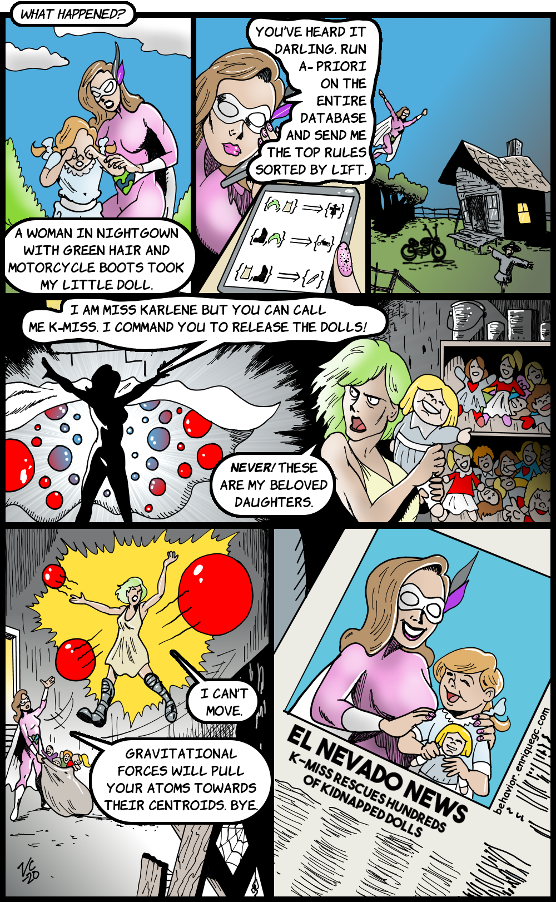

Chapter 6 Discovering Behaviors with Unsupervised Learning
So far, we have been working with supervised learning methods, that is, models for which the training instances have two elements: (1) a set of input values (features) and (2) the expected output (label). As mentioned in chapter 1, there are other types of machine learning methods and one of those is unsupervised learning which is the topic of this chapter. In unsupervised learning, the training instances do not have a response variable (e.g., a label). Thus, the objective is to extract knowledge from the available data without any type of guidance (supervision). For example, given a set of variables that characterize a person, we would like to find groups of people with similar behaviors. For physical activity behaviors, this could be done by finding groups of very active people versus finding groups of people with low physical activity. Those groups can be useful for delivering targeted suggestions or services thus, enhancing and personalizing the user experience.
This chapter starts with one of the most popular unsupervised learning algorithms: \(k\)-means clustering. Next, an example of how this technique can be applied to find groups of students with similar characteristics is presented. Then, association rules mining is presented, which is another type of unsupervised learning method. Finally, association rules are used to find criminal patterns from a homicide database.
6.1 \(k\)-means Clustering
kmeans_steps.R
This is one of the most commonly used unsupervised methods due to its simplicity and efficacy. Its objective is to find groups of points such that points in the same group are similar and points from different groups are as dissimilar as possible. The number of groups \(k\) needs to be defined a priori. The method is based on computing distances to centroids. The centroid of a set of points is computed by taking the mean of each of their features. The \(k\)-means algorithm is as follows:
Generate k centroids at random.
Repeat until no change or max iterations:
Assign each data point to the closest centroid.
Update centroids.To measure the distance between a data point and a centroid, the Euclidean distance is typically used, but other distances can be used as well depending on the application. As an example, let’s cluster user responses from the STUDENTS’ MENTAL HEALTH dataset. This database contains questionnaire responses about depression, acculturative stress, social connectedness, and help-seeking behaviors from students at a University in Japan. To demonstrate how \(k\)-means work, we will only choose two variables so we can plot the results. The variables are ToAS (Total Acculturative Stress) and ToSC (Total Social Connectedness). The ToAS measures the emotional challenges when adapting to a new culture while ToSC measures emotional distance with oneself and other people. For the clustering, the parameter \(k\) will be set to \(3\), that is, we want to group the points into \(3\) disjoint groups. The code that implements the \(k\)-means algorithm can be found in the script kmeans_steps.R. The algorithm begins by selecting \(3\) centroids at random. Figure 6.1 shows a scatterplot of the variables ToAS and ToSC along with the random centroids.
FIGURE 6.1: Three centroids chosen randomly.
Next, at the first iteration, each point is assigned to the closest centroid. This is depicted in Figure 6.2 (top left). Then, the centroids are updated (moved) based on the new assignments. In the next iteration, the points are reassigned to the closest centroids and so on. Figure 6.2 shows the first \(4\) iterations of the algorithm.
FIGURE 6.2: First \(4\) iterations of \(k\)-means.
From iteration \(1\) to \(2\) the centroids moved considerably. After that, they began to stabilize. Formally, the algorithm tries to minimize the total within cluster variation of all clusters. The cluster variation of a single cluster \(C_k\) is defined as:
\[\begin{equation} W(C_k) = \sum_{x_i \in C_k}{(x_i - \mu_k)^2} \tag{6.1} \end{equation}\]
where \(x_i\) is a data point and \(\mu_k\) is the centroid of cluster \(C_k\). Thus, the total within cluster variation \(TWCV\) is:
\[\begin{equation} TWCV = \sum_{i=1}^k{W(C_i)} \tag{6.2} \end{equation}\]
that is, the sum of all within-cluster variations across all clusters. The objective is to find the \(\mu_k\) centroids that make \(TWCV\) minimal. Finding the global optimum is a difficult problem. However, the iterative algorithm described above often produces good approximations.
6.1.1 Grouping Student Responses
group_students.R
In the previous example, we only used two variables to perform the clustering. Let’s now use more variables from the STUDENTS’ MENTAL HEALTH dataset to find groups. The full code can be found in group_students.R. After removing missing values, one-hot encoding categorical variables, and some additional cleaning, the following \(10\) variables were selected:
# Select which variables are going to be used for clustering.
selvars <- c("Stay","English_cate","Intimate"
,"APD","AHome","APH","Afear",
"ACS","AGuilt","ToAS")Additionally, it is advisable to normalize the data between \(0\) and \(1\) since we are dealing with distance computations and we want to put the same weight on each variable. To plot the \(10\) variables, we can use MDS (described in chapter 4) to project the data into \(2\) dimensions (Figure 6.3).
FIGURE 6.3: Students responses projected into 2D with MDS.
Visually, it seems that there are \(4\) distinct groups of points. Based on this initial guess, we can set \(k=4\) and use the kmeans() function included in base R to find the groups automatically.
The first argument of kmeans() is a data frame or a matrix and the second argument the number of clusters. Figure 6.4 shows the resulting clustering. The kmeans() method returns an object that contains several components including cluster that stores the assigned cluster for each data point and centers that stores the centroids.
FIGURE 6.4: Students responses groups when \(k=4\).
The \(k\)-means algorithm found the same clusters as we would intuitively expect. We can check how different the groups are by inspecting some of the variables. For example, by plotting a boxplot of the Intimate variable (Figure 6.5). This variable is \(1\) if the student has an intimate partner or \(0\) otherwise. Since there are only two possible values the boxplot looks flat. This shows that cluster_1 and cluster_3 are different from cluster_2 and cluster_4.
FIGURE 6.5: Boxplot of Intimate variable.
Additionally, let’s plot the ACS variable which represents the total score of culture shock (see Figure 6.6). This one has a minimum value of \(3\) and a max value of \(13\).
FIGURE 6.6: Boxplot of ACS variable.
cluster_2 and cluster_4 were similar based on the Intimate variable, but if we take a look at the difference in medians based on ACS, cluster_2 and cluster_4 are the most dissimilar clusters which gives an intuitive idea of why those two clusters were split into two different ones by the algorithm.
So far, the number of groups \(k\) has been chosen arbitrarily or by visual inspection. But, is there an automatic way to select the best k? As always… this depends on the task at hand but there is a method called Silhouette index that can be used to select the optimal \(k\) based on an optimality criterion. This index is presented in the next section.
6.2 The Silhouette Index
As opposed to supervised learning, in unsupervised learning there is no ground truth to validate the results. In clustering, one way to validate the resulting groups is to plot them and manually explore the clusters’ data points and look for similarities and/or differences. But sometimes we may also want to automate the process and have a quantitative way to measure how well the clustering algorithm grouped the points with the given set of parameters. If we had such a method we could do parameter optimization, for example, to find the best \(k\). Well, there is something called the silhouette index (Rousseeuw 1987) and it can be used to measure the correctness of the clusters.
This index is computed for each data point and tells us how well they are clustered. The total silhouette index is the mean of all points’ indices and gives us an idea of how well the points were clustered overall. This index goes from \(-1\) to \(1\) and I’ll explain in a moment how to interpret it, but first let’s see how it is computed.
To compute the silhouette index two things are needed: the already created groups and the distances between points. Let:
\(a(i)=\) average dissimilarity (distance) of point \(i\) to all other points in \(A\), where \(A\) is the cluster to which \(i\) has been assigned to (Figure 6.7).
\(d(i,C)=\) average dissimilarity between \(i\) and all points in some cluster \(C\).
\(b(i)=\min_{C \neq A}d(i,C)\). The cluster \(B\) for which the minimum is obtained is the neighbor of point \(i\). (The second best choice for \(i\)).
FIGURE 6.7: Three resulting clusters: A, B, and C. (Reprinted from Journal of computational and applied mathematics Vol. 20, Rousseeuw, P. J., “Silhouettes: a graphical aid to the interpretation and validation of cluster analysis” pp. 53-65, Copyright 1987, with permission from Elsevier. doi:https://doi.org/10.1016/0377-0427(87)90125-7).
Thus, \(s(i)\) (the silhouette index of point \(i\)) is obtained with the formula:
\[\begin{equation} s(i) = \frac{{b(i) - a(i)}}{{\max \{ a(i),b(i)\} }} \tag{6.3} \end{equation}\]
When \(s(i)\) is close to \(1\), it means that the within dissimilarity \(a(i)\) is much smaller than the smallest between dissimilarity \(b(i)\) thus, \(i\) can be considered to be well clustered. When \(s(i)\) is close to \(0\) it is not clear whether \(i\) belongs to \(A\) or \(B\). When \(s(i)\) is close to \(-1\), \(a(i)\) is larger than \(b(i)\) meaning that \(i\) may have been misgrouped. The total silhouette index \(S\) is the average of all indices \(s(i)\) of all points.
In R, the cluster package has the function silhouette() that computes the silhouette index. The following code snippet clusters the student responses into \(4\) groups and computes the index of each point with the silhouette() function. Its first argument is the cluster assignments as returned by kmeans(), and the second argument is a dist object that contains the distances between each pair of points. We can compute this information from our data frame with the dist() function. The silhouette() function returns an object with the silhouette index of each data point. We can compute the total index by taking the average which in this case was \(0.346\).
library(cluster) # Load the required package.
set.seed(1234)
clusters <- kmeans(normdf, 4) # Try with k=4
# Compute silhouette indices for all points.
si <- silhouette(clusters$cluster, dist(normdf))
# Print first rows.
head(si)
#> cluster neighbor sil_width
#> [1,] 1 4 0.3482364
#> [2,] 2 4 0.3718735
#> [3,] 3 1 0.3322198
#> [4,] 1 4 0.3998996
#> [5,] 1 4 0.3662811
#> [6,] 3 1 0.1463607
# Compute total Silhouette index by averaging the individual indices.
mean(si[,3])
# [1] 0.3466427One nice thing about this index is that it can be presented visually. To generate a silhouette plot, use the generic plot() function and pass the object returned by silhouette().
FIGURE 6.8: Silhouette plot when \(k=4\).
Figure 6.8 shows the silhouette plot when \(k=4\). The horizontal lines represent the individual silhouette indices. In this plot, all of them are positive. The height of each cluster gives a visual idea of the number of data points contained in it with respect to other clusters. We can see for example that cluster \(2\) is the smallest one. On the right side, is the number of points in each cluster and their average silhouette index. At the bottom, the total silhouette index is printed (\(0.35\)). We can try to cluster the points into \(7\) groups instead of \(4\) and see what happens.
set.seed(1234)
clusters <- kmeans(normdf, 7)
si <- silhouette(clusters$cluster, dist(normdf))
plot(si, cex.names=0.6, col = 1:7,
main = "Silhouette plot, k=7",
border=NA)FIGURE 6.9: Silhouette plot when \(k=7\).
Here, cluster \(2\) and \(4\) have data points with negative indices and the overall score is \(0.26\). This suggests that \(k=4\) produces more coherent clusters as compared to \(k=7\).
6.3 Mining Association Rules
Association rule mining consists of a set of methods to extract patterns (rules) from transactional data. For example, shopping behavior can be analyzed by finding rules from customers’ shopping transactions. A transaction is an event that involves a set of items. For example, when someone buys a soda, a bag of chips, and a chocolate bar the purchase is registered as one transaction containing \(3\) items. I apologize for using this example for those of you with healthy diets. Based on a database that contains many transactions, it is possible to uncover item relationships. Those relationships are usually expressed as implication rules of the form \(X \implies Y\) where \(X\) and \(Y\) are sets of items. Both sets are disjoint, this means that items in \(X\) are not in \(Y\) and vice-versa which can be formally represented as \(X \cap Y = \emptyset\). That is, the intersection of the two sets is the empty set. \(X \implies Y\) is read as: if \(X\) then \(Y\). The left-hand-side (lhs) \(X\) is called the antecedent and the right-hand-side (rhs) \(Y\) is called the consequent.
In the unhealthy supermarket example, a rule like \(\{chips, chocolate\} \implies \{soda\}\) can be interpreted as if someone buys chips and chocolate then, it is likely that this same person will also buy soda. These types of rules can be used for targeted advertisements, product placement decisions, etc.
The possible number of rules that can be generated grows exponentially as the number of items increases. Furthermore, not all rules may be interesting. The most well-known algorithm to find interesting association rules is called Apriori (Agrawal and Srikant 1994). To quantify if a rule is interesting or not, this algorithm uses two importance measures: support and confidence.
Support. The support \(\text{supp}(X)\) of an itemset \(X\) is the proportion of transactions that contain all the items in \(X\). This quantifies how frequent the itemset is.
Confidence. The confidence of a rule \(\text{conf}(X \implies Y)=\text{supp}(X \cup Y)/\text{supp}(X)\) and can be interpreted as the conditional probability that \(Y\) occurs given that \(X\) is present. This can also be thought of as the probability that a transaction that contains \(X\) also contains \(Y\). The \(\cup\) operator is the union of two sets. This means taking all elements from both sets and removing repeated elements.
Now that there is a way to measure the importance of the rules, the Apriori algorithm first finds itemsets that satisfy a minimum support and generates rules from those itemsets that satisfy a minimum confidence. Those minimum thresholds are set by the user. The lower the thresholds, the more rules returned by the algorithm. One thing to note is that Apriori only generates rules with itemsets of size \(1\) on the right-hand side. Another common metric to measure the importance of a rule is the lift. Lift is typically used after Apriori has generated the rules to further filter and/or rank the results.
- Lift. The lift of a rule \(\text{lift}(X \implies Y) = \text{supp}(X \cup Y) / (\text{supp}(X)\text{supp}(Y))\) is similar to the confidence but it also takes into consideration the frequency of \(Y\). A lift of \(1\) means that there is no association between \(X\) and \(Y\). A lift greater than \(1\) means that \(Y\) is likely to occur if \(X\) occurs and a lift less than \(1\) means that \(Y\) is unlikely to occur when \(X\) occurs.
Let’s compute all those metrics using an example. The following table shows a synthetic example database of transactions from shoppers with unhealthy behaviors.

FIGURE 6.10: Example database with 10 transactions.
The support of the itemset consisting of a single item ‘chocolate’ is \(\text{supp}(\{chocolate\}) = 5/10 = 0.5\) because ‘chocolate’ appears in \(5\) out of the \(10\) transactions. The support of \(\{chips, soda\}\) is \(3/10 = 0.3\).
The confidence of the rule \(\{chocolate, chips\} \implies \{soda\}\) is:
\[\begin{align*} \text{conf}(\{chocolate, chips\} \implies \{soda\})&=\frac{\text{supp}(\{chocolate, chips, soda\})}{\text{supp}(\{chocolate,chips\})} \\ &=(2/10) / (3/10) \\ &=0.66 \end{align*}\]
The lift of \(\{soda\} \implies \{ice cream\}\) is:
\[\begin{align*} \text{lift}(\{soda\} \implies \{ice cream\})&=\frac{\text{supp}(\{soda, ice cream\})}{\text{supp}(\{soda\})\text{supp}(\{ice cream\})} \\ &=(2/10) / ((7/10)(3/10)) \\ &=0.95. \end{align*}\]
Association rules mining is unsupervised in the sense that there are no labels or ground truth. Many applications of association rules are targeted to market basket analysis to gain insights into shoppers’ behavior and take actions to increase sales. To find such rules it is necessary to have ‘transactions’ (sets of items), for example, supermarket products. However, this is not the only application of association rules. There are other problems that can be structured as transactions of items. For example in medicine, diseases can be seen as transactions and symptoms as items. Thus, one can apply association rules algorithms to find symptoms and disease relationships. Another application is in recommender systems. Take, for example, movies. Transactions can be the set of movies watched by every user. If you watched a movie \(m\) then, the recommender system can suggest another movie that co-occurred frequently with \(m\) and that you have not watched yet. Furthermore, other types of relational data can be transformed into transaction-like structures to find patterns and this is precisely what we are going to do in the next section to mine criminal patterns.
6.3.1 Finding Rules for Criminal Behavior
crimes_process.R crimes_rules.R
In this section, we will use association rules mining to find patterns in the HOMICIDE REPORTS14 dataset. This database contains homicide reports from 1980 to 2014 in the United States. The database is structured as a table with \(24\) columns and \(638454\) rows. Each row corresponds to a homicide report that includes city, state, year, month, sex of victim, sex of perpetrator, if the crime was solved or not, weapon used, age of the victim and perpetrator, the relationship type between the victim and the perpetrator, and some other information.
Before trying to find rules, the data needs to be preprocessed and converted into transactions. Each homicide report will be a transaction and the items are the possible values of \(3\) of the columns: Relationship, Weapon, and Perpetrator.Age. The Relationship variable can take values like Stranger, Neighbor, Friend, etc. In total, there are \(28\) possible relationship values including Unknown. For the purpose of our analysis, we will remove rows with unknown values in Relationship and Weapon. Since Perpetrator.Age is an integer, we need to convert it into categories. The following age groups are created: child (< \(13\) years), teen (\(13\) to \(17\) years), adult (\(18\) to \(45\) years), and lateAdulthood (> \(45\) years). After these cleaning and preprocessing steps, the dataset has \(3\) columns and \(328238\) rows (see Figure 6.11). The script used to perform the preprocessing is crimes_process.R.
FIGURE 6.11: First rows of preprocessed crimes data frame. Source: Data from the Murder Accountability Project, founded by Thomas Hargrove (CC BY-SA 4.0) [https://creativecommons.org/licenses/by-sa/4.0/legalcode].
Now, we have a data frame that contains only the relevant information. Each row will be used to generate one transaction. An example transaction may be {R.Wife, Knife, Adult}. This one represents the case where the perpetrator is an adult who used a knife to kill his wife. Note the ‘R.’ at the beginning of ‘Wife’. This ‘R.’ was added for clarity in order to identify that this item is a relationship. One thing to note is that every transaction will consist of exactly \(3\) items. This is a bit different than the market basket case in which every transaction can include a varying number of products. Although this item-size constraint was a design decision based on the structure of the original data, this will not prevent us from performing the analysis to find interesting rules.
To find the association rules, the arules package (Hahsler et al. 2019) will be used. This package has an interface to an efficient implementation in C of the Apriori algorithm. This package needs the transactions to be stored as an object of type ‘transactions’. One way to create this object is to use a logical matrix and cast it into a transactions object. The rows of the logical matrix represent transactions and columns represent items. The number of columns equals the total number of possible items. A TRUE value indicates that the item is present in the transaction and FALSE otherwise. In our case, the matrix has \(46\) columns. The crimes_process.R script has code to generate this matrix M. The \(46\) items (columns of M) are:
as.character(colnames(M))
#> [1] "R.Acquaintance" "R.Wife" "R.Stranger"
#> [4] "R.Girlfriend" "R.Ex-Husband" "R.Brother"
#> [7] "R.Stepdaughter" "R.Husband" "R.Friend"
#> [10] "R.Family" "R.Neighbor" "R.Father"
#> [13] "R.In-Law" "R.Son" "R.Ex-Wife"
#> [16] "R.Boyfriend" "R.Mother" "R.Sister"
#> [19] "R.Common-Law Husband" "R.Common-Law Wife" "R.Stepfather"
#> [22] "R.Stepson" "R.Stepmother" "R.Daughter"
#> [25] "R.Boyfriend/Girlfriend" "R.Employer" "R.Employee"
#> [28] "Blunt Object" "Strangulation" "Rifle"
#> [31] "Knife" "Shotgun" "Handgun"
#> [34] "Drowning" "Firearm" "Suffocation"
#> [37] "Fire" "Drugs" "Explosives"
#> [40] "Fall" "Gun" "Poison"
#> [43] "teen" "adult" "lateAdulthood"
#> [46] "child"The following snippet shows how to convert the matrix into an arules transactions object. Before the conversion, the package arules needs to be loaded. For convenience, the transactions are saved in a file transactions.RData.
library(arules)
# Convert into a transactions object.
transactions <- as(M, "transactions")
# Save transactions file.
save(transactions, file="transactions.RData")Now that the database is in the required format we can start the analysis. The crimes_rules.R script has the code to perform the analysis. First, the transactions file that we generated before is loaded:
Note that additionally to the arules package, we also loaded the arulesViz package (Hahsler 2019). This package has several functions to generate cool plots of the learned rules! A summary of the transactions can be printed with the summary() function:
# Print summary.
summary(transactions)
#> transactions as itemMatrix in sparse format with
#> 328238 rows (elements/itemsets/transactions) and
#> 46 columns (items) and a density of 0.06521739
#>
#> most frequent items:
#> adult Handgun R.Acquaintance R.Stranger
#> 257026 160586 117305 77725
#> Knife (Other)
#> 61936 310136
#>
#> element (itemset/transaction) length distribution:
#> sizes
#> 3
#> 328238
#>
#> Min. 1st Qu. Median Mean 3rd Qu. Max.
#> 3 3 3 3 3 3
#>
#> includes extended item information - examples:
#> labels
#> Relationship1 R.Acquaintance
#> Relationship2 R.Wife
#> Relationship3 R.StrangerThe summary shows the total number of rows (transactions) and the number of columns. It also prints the most frequent items, in this case, adult with \(257026\) occurrences, Handgun with \(160586\), and so on. The itemset sizes are also displayed. Here, all itemsets have a size of \(3\) (by design). Some other summary statistics are also printed.
We can use the itemFrequencyPlot() function from the arulesViz package to plot the frequency of items.
The type argument specifies that we want to plot the relative frequencies. Use "absolute" instead to plot the total counts. topN is used to select how many items are plotted. Figure 6.12 shows the output.
FIGURE 6.12: Frequences of the top 15 items.
Now it is time to find some interesting rules! This can be done with the apriori() function as follows:
# Run apriori algorithm.
resrules <- apriori(transactions,
parameter = list(support = 0.001,
confidence = 0.5,
# Find rules with at least 2 items.
minlen = 2,
target = 'rules'))The first argument is the transactions object. The second argument parameter specifies a list of algorithm parameters. In this case we want rules with a minimum support of \(0.001\) and a confidence of at least \(0.5\). The minlen argument specifies the minimum number of allowed items in a rule (antecedent + consequent). We set it to \(2\) since we want rules with at least one element in the antecedent and one element in the consequent, for example, {item1 => item2}. This Apriori algorithm creates rules with only one item in the consequent. Finally, the target parameter is used to specify that we want to find rules because the function can also return item sets of different types (see the documentation for more details). The returned rules are saved in the resrules variable that can be used later to explore the results. We can also print a summary of the returned results.
# Print a summary of the results.
summary(resrules)
#> set of 141 rules
#>
#> rule length distribution (lhs + rhs):sizes
#> 2 3
#> 45 96
#>
#> Min. 1st Qu. Median Mean 3rd Qu. Max.
#> 2.000 2.000 3.000 2.681 3.000 3.000
#>
#> summary of quality measures:
#> support confidence lift count
#> Min. :0.001030 Min. :0.5045 Min. :0.6535 Min. : 338
#> 1st Qu.:0.001767 1st Qu.:0.6478 1st Qu.:0.9158 1st Qu.: 580
#> Median :0.004424 Median :0.7577 Median :1.0139 Median : 1452
#> Mean :0.021271 Mean :0.7269 Mean :1.0906 Mean : 6982
#> 3rd Qu.:0.012960 3rd Qu.:0.8131 3rd Qu.:1.0933 3rd Qu.: 4254
#> Max. :0.376836 Max. :0.9539 Max. :4.2777 Max. :123692
#>
#> mining info:
#> data ntransactions support confidence
#> transactions 328238 0.001 0.5By looking at the summary, we see that the algorithm found \(141\) rules that satisfy the support and confidence thresholds. The rule length distribution is also printed. Here, \(45\) rules are of size \(2\) and \(96\) rules are of size \(3\). Then, some standard statistics are shown for support, confidence, and lift. The inspect() function can be used to print the actual rules. Rules can be sorted by one of the importance measures. The following code sorts by lift and prints the first \(20\) rules. Figure 6.13 shows the output.
# Print the first n (20) rules with highest lift in decreasing order.
inspect(sort(resrules, by='lift', decreasing = T)[1:20])FIGURE 6.13: Output of the inspect() function.
The first rule with a lift of \(4.27\) says that if a homicide was committed by an adult and the victim was the stepson, then is it likely that a blunt object was used for the crime. By looking at the rules, one can also note that whenever blunt object appears either in the lhs or rhs, the victim was most likely an infant. Another thing to note is that when the victim was boyfriend, the crime was likely committed with a knife. This is also mentioned in the reports ‘Homicide trends in the United States’ (Cooper, Smith, et al. 2012):
From 1980 through 2008 ‘Boyfriends were more likely to be killed by knives than any other group of intimates’.
According to rule \(20\), crimes involving girlfriend have a strong relationship with strangulation. This can also be confirmed in (Cooper, Smith, et al. 2012):
From 1980 through 2008 ‘Girlfriends were more likely to be killed by force…’.
The resulting rules can be plotted with the plot() function (see Figure 6.14). By default, it generates a scatterplot with the support in the \(x\) axis and confidence in the \(y\) axis colored by lift.
FIGURE 6.14: Scatterplot of rules support vs. confidence colored by lift.
The plot shows that rules with a high lift also have a low support and confidence. Hahsler (2017) mentioned that rules with high lift typically have low support. The plot can be customized for example to show the support and lift in the axes and color them by confidence. The axes can be set with the measure parameter and the coloring with the shading parameter. The function also supports different plotting engines including static and interactive. The following code generates a customized interactive plot by setting engine = "htmlwidget". This is very handy if you want to know which points correspond to which rules. By hovering the mouse on the desired point the corresponding rule is shown as a tooltip box (Figure 6.15). The interactive plots also allow to zoom in regions by clicking and dragging.
# Customize scatterplot to make it interactive
# and plot support vs. lift colored by confidence.
plot(resrules, engine = "htmlwidget",
measure = c("support", "lift"), shading = "confidence")FIGURE 6.15: Interactive scatterplot of rules.
The arulesViz package has a nice option to plot rules as a graph. This is done by setting method = "graph". We can also make the graph interactive for easier exploration by setting engine="htmlwidget". For clarity, the font size is reduced with cex=0.9. Here we plot the first \(25\) rules.
# Plot rules as a graph.
plot(head(sort(resrules, by = "lift"), n=25),
method = "graph",
control=list(cex=.9),
engine="htmlwidget")FIGURE 6.16: Interactive graph of rules.
Figure 6.16 shows a zoomed-in portion of the entire graph. Circles represent rules and rounded squares items. The size of the circle is relative to the support and color relative to the lift. Incoming arrows represent the items in the antecedent and the outgoing arrow of a circle points to the item in the consequent part of the rule. From this graph, some interesting patterns can be seen. First, when the age category of the perpetrator is lateAdulthood, the victims were the husband or ex-wife. When the perpetrator is a teen, the victim was likely a friend or stranger.
The arulesViz package has a cool function ruleExplorer() that generates a shiny app with interactive controls and several plot types. When running the following code (output not shown) you may be asked to install additional shiny related packages.
Sometimes Apriori returns thousands of rules. There is a convenient subset() function to extract rules of interest. For example, we can select only the rules that contain R.Girlfriend in the antecedent (lhs) and print the top three with highest lift (Figure 6.17 shows the result):
# Subset transactions.
rulesGirlfriend <- subset(resrules, subset = lhs %in% "R.Girlfriend")
# Print rules with highest lift.
inspect(head(rulesGirlfriend, n = 3, by = "lift"))FIGURE 6.17: Output of the inspect() function.
In this section, we showed how interesting rules can be extracted from a crimes database. Several preprocessing steps were required to transform the tabular data into transactional data. This example already demonstrated how the same data can be represented in different ways (tabular and transactional). The next chapter will cover more details about how data can be transformed into different representations suitable for different types of learning algorithms.
6.4 Summary
One of the types of machine learning is unsupervised learning in which there are no labels. This chapter introduced some unsupervised methods such as clustering and association rules.
- The objective of \(k\)-means clustering is to find groups of points such that points in the same group are similar and points from different groups are as dissimilar as possible.
- The centroid of a group is calculated by taking the mean value of each feature.
- In \(k\)-means, one needs to specify the number of groups \(k\) before running the algorithm.
- The Silhouette Index is a measure that tells us how well a set of points were clustered. This measure can be used to find the optimal number of groups \(k\).
- Association rules can find patterns in an unsupervised manner.
- The Apriori algorithm is the most well-known method for finding association rules.
- Before using the Apriori algorithm, one needs to format the data as transactions.
- A transaction is an event that involves a set of items.
